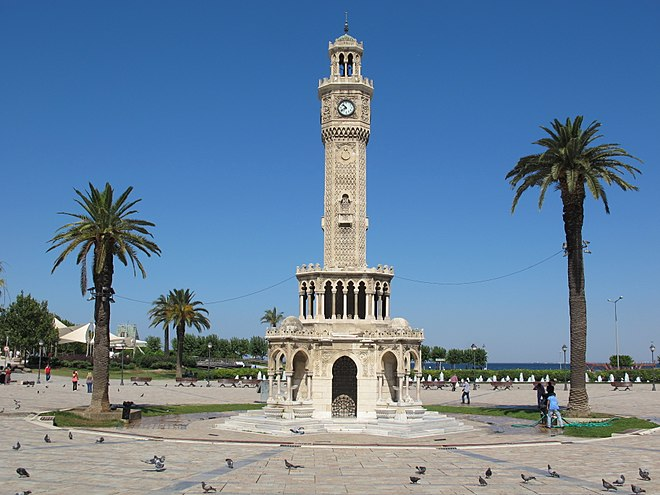
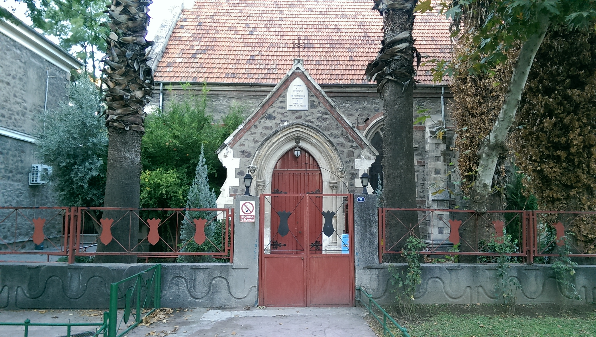

 Izmir Clock Tower is a historic clock tower located at the Konak Square in the Konak district of İzmir. Asansör is a historical building in İzmir, within the boundaries of the metropolitan district of Konak.  Saint Polycarp Church is one of the main church in İzmir.